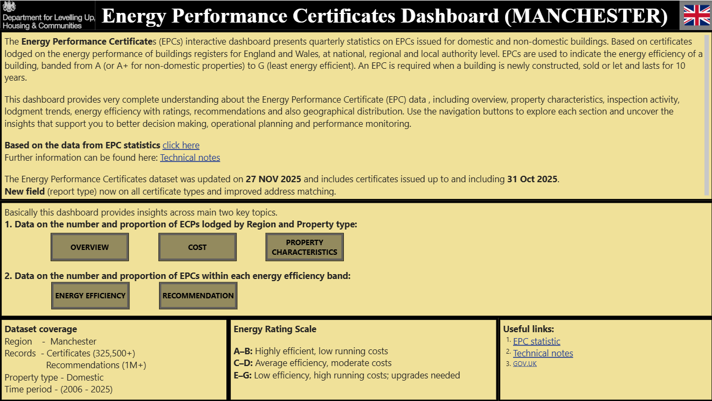
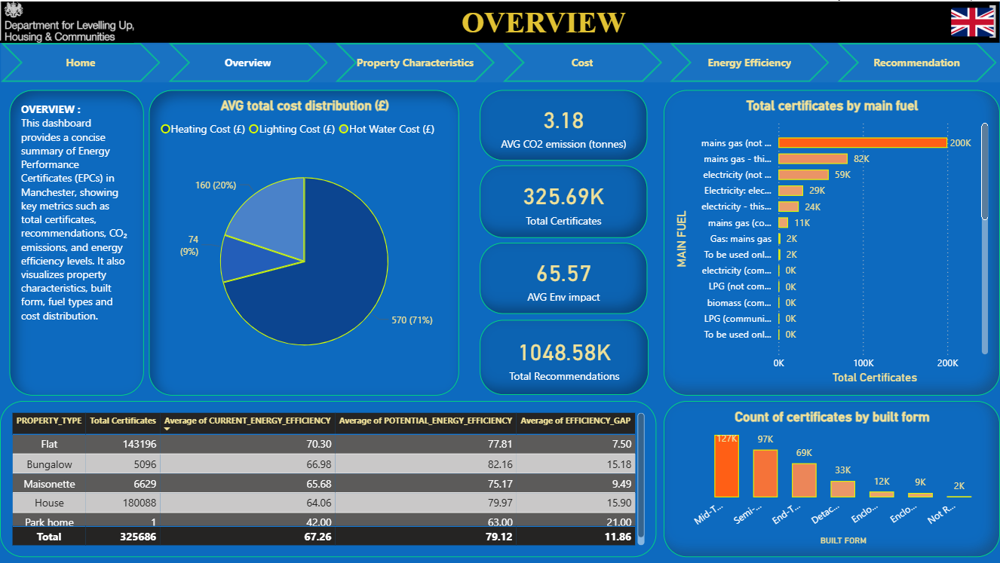
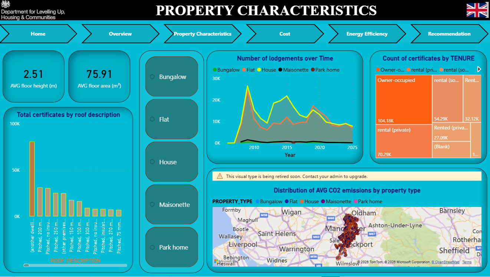
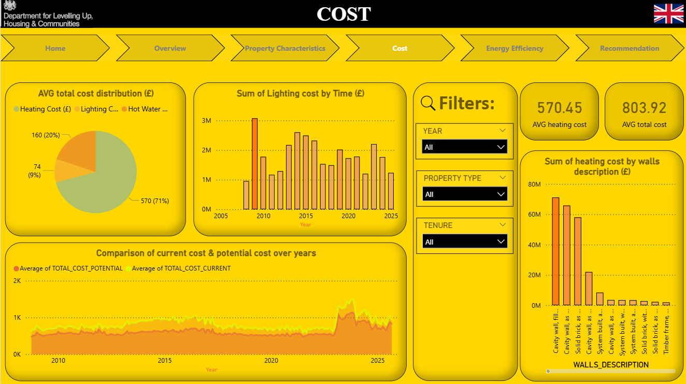
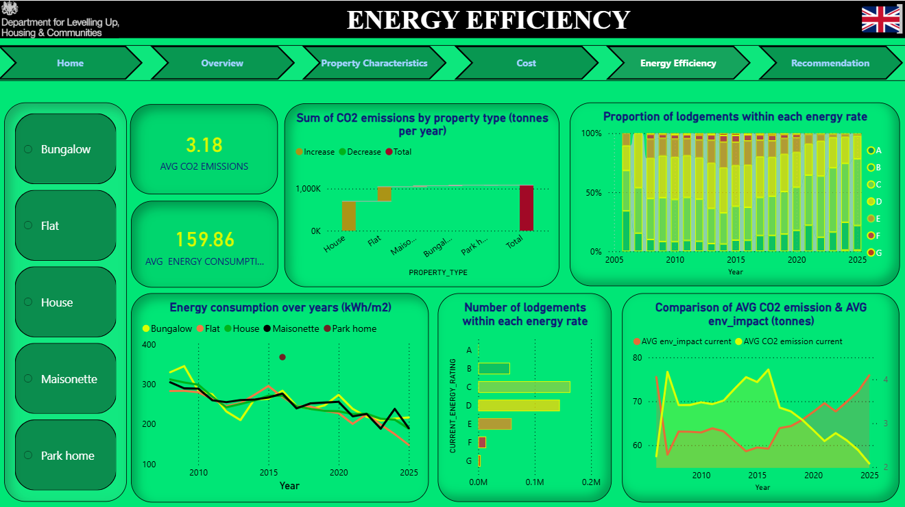
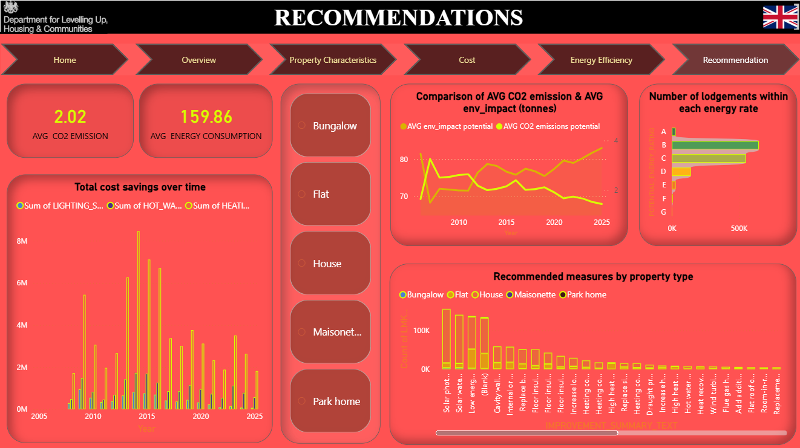

Manchester Energy Performance Analysis
A data-driven analysis of residential energy efficiency, CO₂ emissions, and costs using UK EPC data (2006–2025).
// Project Overview
This project analyzes residential Energy Performance Certificate (EPC) data in Manchester to evaluate energy efficiency, CO₂ emissions, and energy costs. SQL Server was used for data cleaning and transformation, while Power BI dashboards were built to explore patterns across property types, energy ratings, and costs.
// Key Questions Explored
// Methodology
Collected UK EPC data (2006–2025) filtered for Manchester properties from official government datasets.
Processed in SQL Server, removed duplicates, handled missing values, and created structured views for analysis.
Built Power BI data model and created DAX measures for KPIs such as energy costs, CO₂ emissions, and efficiency ratings.
Designed interactive dashboards with slicers for property type, tenure, and energy rating to support exploration.
// Key Insights
// Dashboards





